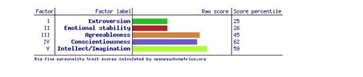

Personal Profile
Myers-Briggs Test
Traits: Introverted – 62%, Observant – 60%, Feeling – 52%, Judging – 58%, Turbulent – 71%
Role: Sentinel – Strategy: Constant Improvement
Brief description of Type:
In their unassuming, understated way, Defenders help make the world go round. Hardworking and devoted, people with this personality type feel a deep sense of responsibility to those around them. Defenders can be counted on to meet deadlines, remember birthdays and special occasions, uphold traditions, and shower their loved ones with gestures of care and support. But they rarely demand recognition for all that they do, preferring instead to operate behind the scenes.
More information: Myers-Briggs Results
Learning Style test
Results: Kinesthetics learner
Description:
If you are a kinesthetics learner, you learn by touching and doing. You understand and remember things through physical movement. You are a "hands-on" learner who prefers to touch, move, build, or draw what you learn, and you tend to learn better when some type of physical activity is involved. You need to be active and take frequent breaks, you often speak with your hands and with gestures, and you may have difficulty sitting still.
Big Five Personality Test
More information: Big Five Personality Results
What do the results of these tests mean for you?
While mildly insightful, these tests don’t mean a whole lot to me. Most of these tests and test like them are akin to astrology when you read those astrology signs about a person personality/character based the descriptions are really just saying the same thing 12 different ways with just enough slight difference to convince the reader they have fundamentally different meanings. In that saying reviewing the results of those tests I identified with various elements of them. Reading over the Myers Briggs result which was probably the most comprehensive in terms of explaining what the results meant, I saw a lot of traits I identified with and for some even to the degree in which it stated how strong those traits where within me, but I also saw a lot in there that I don’t necessarily agree with. For example. It said ISFJ-T people don’t like to cut corners in the work environment that is just plain wrong half my career has been finding effective way to cut corners, it not about being lazy or not putting in the effort I am certainly not afraid of hard work but I am a big believer in working smart not hard.
How do you think these results may influence your behaviour in a team?
To be honest at best I think it will cause everyone in the team to reflect on what they think their traits are, which may drive changes within themselves so they can fit version of who they want to be in the team, but I don’t think the results themselves will have too much bearing because they’re limited. For example, out of the 3 tests I did I think the closet to any real-world accuracy and defining of who I am was the learning style test. I am very much a kinesthetics and visual learner, but I don’t as I just said I am a kinesthetics learner and a visual learning and it depends on the environment and what I am learning to which style I lean on more to absorb and learn.
How should you take this into account when forming a team?
The only value these tests have are the possible self-reflection that may cause in the individual. I do not think they be considered when forming a team, but I think they may be insightful to do once a team is formed and then have that team discuss how they feel about their own results what if anything they felt about accuracy of it, if it will drive any changes or observation in themselves. Self-reflection is a vital tool in anyone self-development. At the end of the day people have layers, people are not defined by one element of themselves (or one test). These tests do not allow for the level of complexity that is every single human being. Not in a schizophrenic way but each of have multiple version and personalities of outside, based on a lot of variables, such as mood, hormones, our energy levels, how confident or not we’re feeling based on something like the amount of sleep with good. Depending on those variables I can be two completely different versions of myself. A strong confident leader in a team setting or I can be a self-conscious follower all to eager to sit back and play a supporting role.